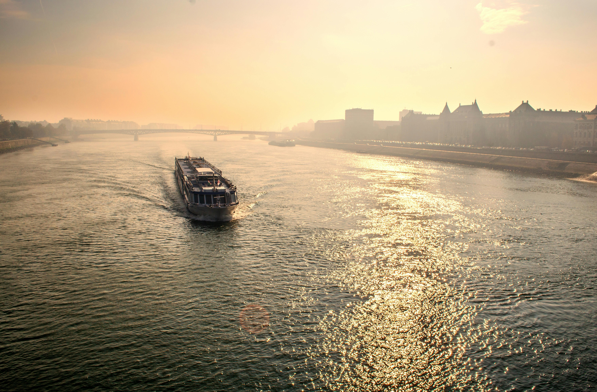

Grands Fleuves

Amazon
L'Amazon est le plus long fleuve d'Amérique du Sud. Voici quelques informations clés :
- Longueur : 7 062 km
- Débit moyen : 209 000 m³/s
- Pays traversés : Brésil, Pérou, Colombie

Nil
Le Nil est le plus long fleuve d'Afrique. Voici quelques informations clés :
- Longueur : 6 650 km
- Débit moyen : 2 830 m³/s
- Pays traversés : Égypte, Soudan, Ouganda

Retour à l'accueil
Danube
Le Danube est un fleuve majeur en Europe. Voici quelques informations clés :
- Longueur : 2 850 km
- Débit moyen : 6 450 m³/s
- Pays traversés : Allemagne, Autriche, Hongrie